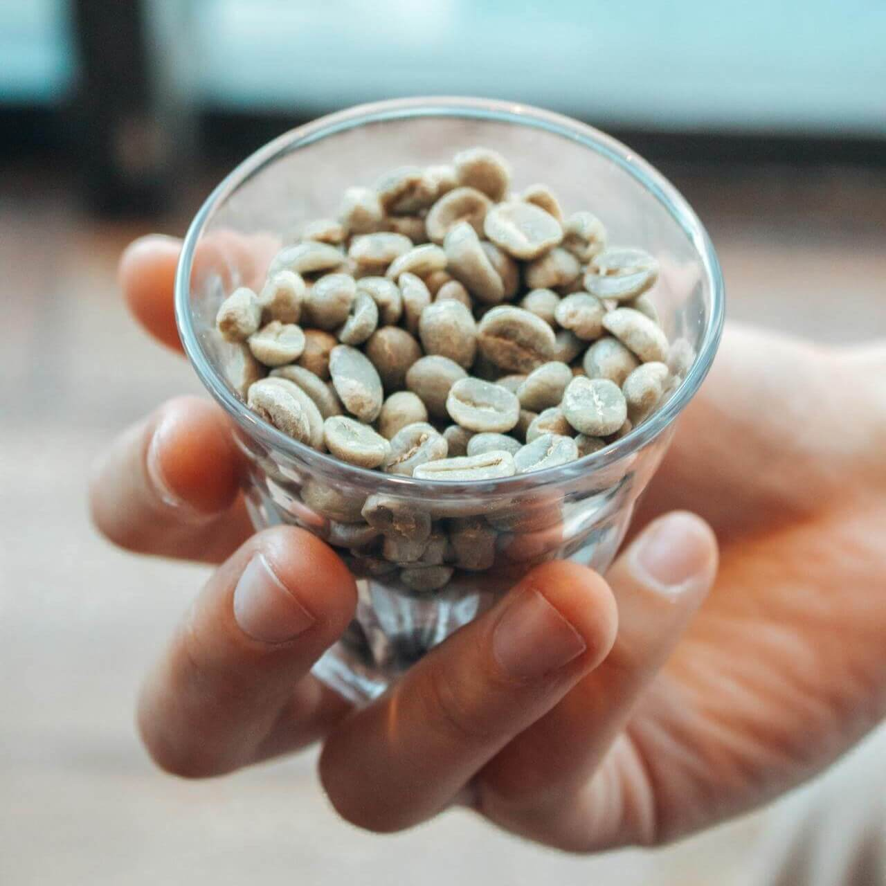
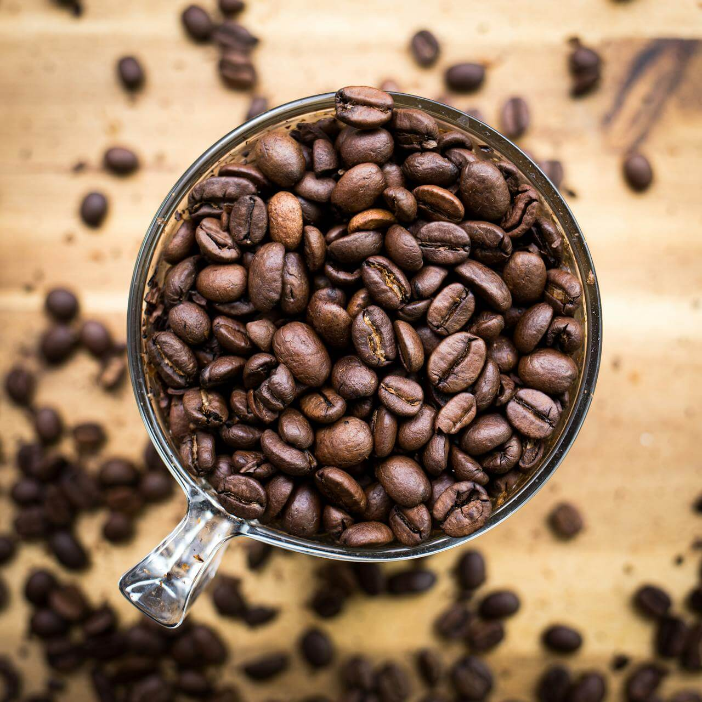
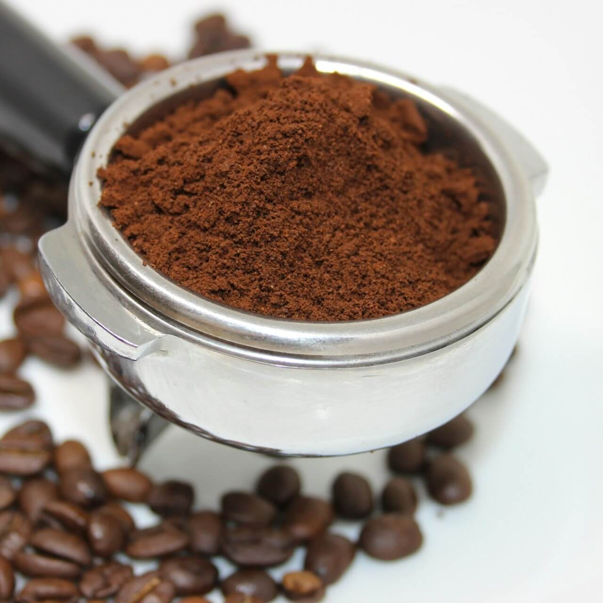
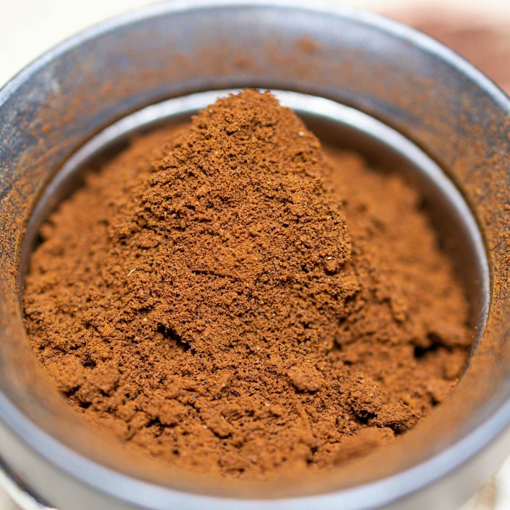
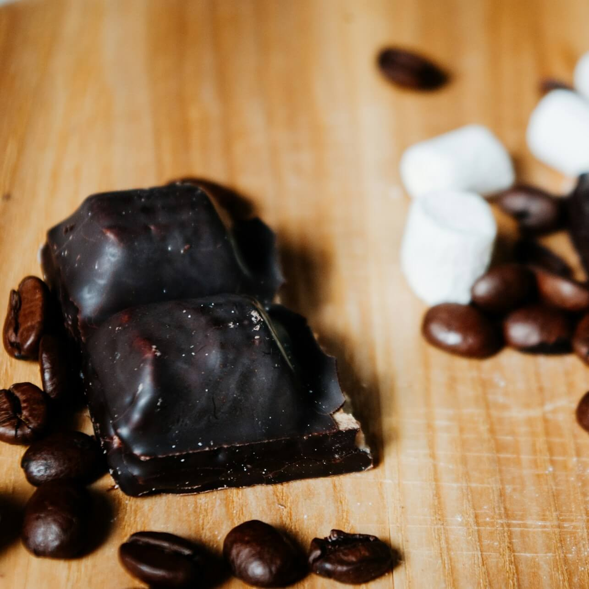
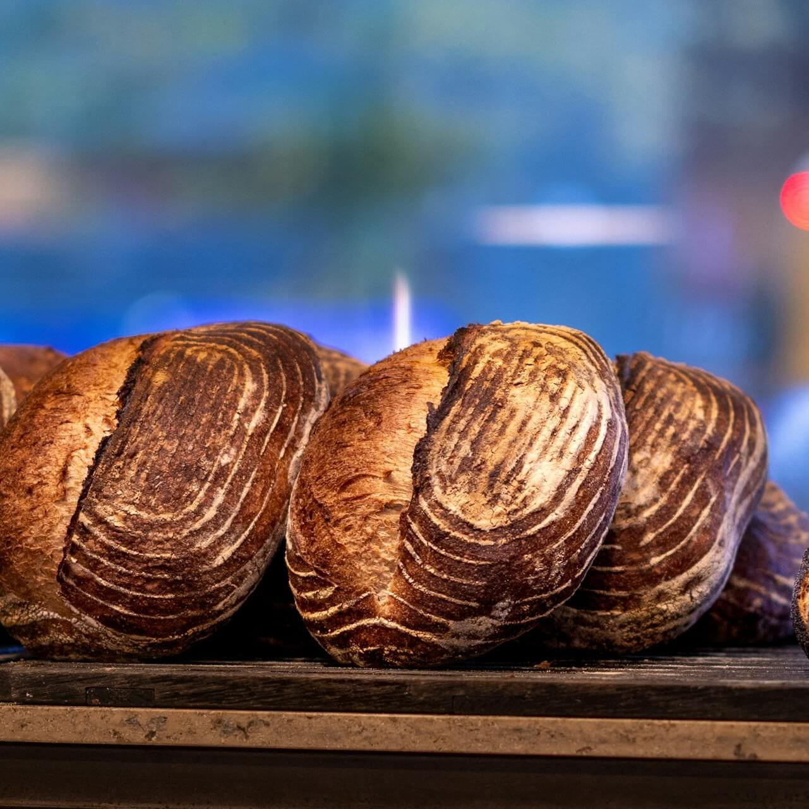

Nuestro catálogo
Nuestros productos están elaborados con dedicación y seleccionados cuidadosamente para ofrecer la mejor calidad. Cada uno refleja nuestra pasión por el café y el compromiso con la excelencia.
Café en grano
Nuestros cafés en grano conservan todo su aroma y frescura natural, permitiéndote disfrutar una experiencia auténtica al molerlos en el momento. Ofrecemos opciones que van desde perfiles suaves y delicados hasta sabores intensos y robustos.

Café en grano reserva clara
Granos de tueste claro que conservan notas suaves y ligeramente dulces, con un aroma delicado y una acidez equilibrada. Ideal para quienes prefieren un café más ligero.
₡5700
Ver producto
Café en grano premium
Granos seleccionados de alta calidad, con un sabor intenso y notas a chocolate. Ideal para moler al momento y disfrutar su frescura.
₡5500
Ver producto
Café en grano tueste oscuro
De sabor fuerte e intenso, con cuerpo robusto y un toque amargo ideal para los amantes del café tradicional.
₡5800
Ver productoCafé molido
El café molido es una opción práctica y lista para preparar, ideal para el consumo diario. Mantiene un equilibrio perfecto entre sabor y aroma, con variedades que se adaptan a diferentes gustos y métodos de preparación.

Café molido gourmet
Selección especial de granos con notas suaves y ligeramente dulces, perfecto para ocasiones especiales.
₡5200
Ver producto
Café molido tradicional
Perfecto para el consumo diario, con un balance ideal entre sabor, aroma y suavidad.
₡4500
Ver producto
Café molido intenso
Tueste oscuro con un sabor fuerte y persistente, ideal para quienes buscan una experiencia más intensa.
₡4800
Ver productoEspeciales
Nuestra línea de productos especiales combina el sabor del café con propuestas creativas como postres y acompañamientos. Son ideales para disfrutar algo diferente y complementar tu experiencia cafetera.

Galletas de café
Deliciosas galletas artesanales con un toque de café, perfectas para acompañar cualquier bebida caliente.
₡2500
Ver producto
Chocolate con café
Exquisita combinación de cacao y café, con un sabor equilibrado entre dulce e intenso.
₡3500
Ver producto
Pan de café
Suave y esponjoso, con un delicado sabor a café que lo hace ideal para el desayuno o la merienda.
₡3000
Ver producto